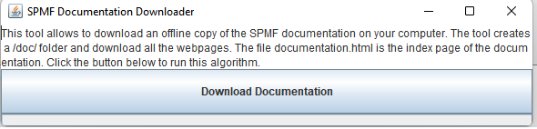
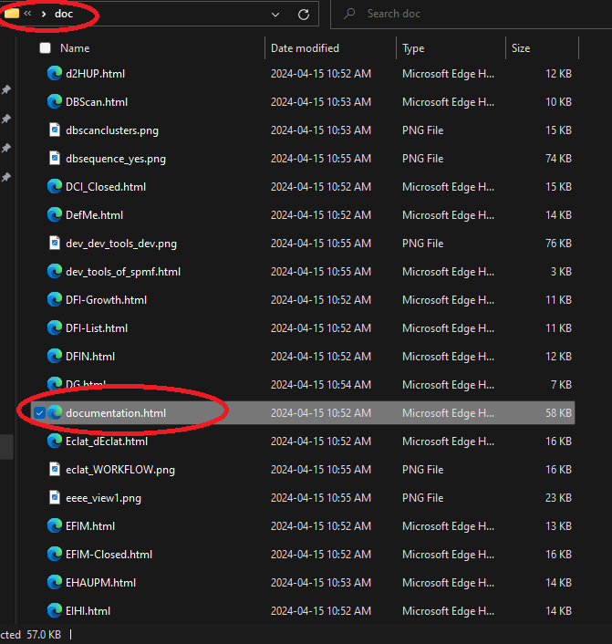

Download an offline copy of the SPMF documentation on your computer (SPMF documentation)
This example explains how to download an offline copy of the SPMF documentation on your computer.
How to run this example?
- If you are using the graphical interface of SPMF, (1) choose the "SPMF_download_offline_documentation_tool" algorithm, (2) and then click "Run algorithm".
- If you want to execute this example from the command
line, then execute this command:
java -jar spmf.jar run SPMF_download_offline_documentation_tool
in a folder containing spmf.jar
By running the above command, a window will open that will let you download an offline copy of the SPMF documentation on your computer.
This window looks like this:

By clicking the "Download Documentation" button, we can start the download.
The tool will then create a /doc/ folder and download all the required content (webpages, pictures and css files).
After the download is completed, the documentation can be opened locally on your computer by opening the file documentation.hml :
